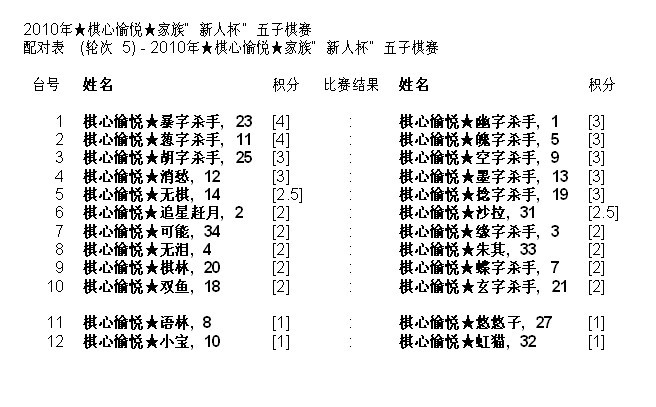

2010年★棋心愉悦★家族“新人杯”五子棋竞赛配对表（轮次5）
#1 2010年★棋心愉悦★家族“新人杯”五子棋竞赛配对表（轮次5）作者：我就不信注册不上 发表时间：2010-7-17 22:25:53

［此帖子已被 我就不信注册不上 在 2010-7-17 22:26:54 编辑过］
#2 Re:2010年★棋心愉悦★家族“新人杯”五子棋竞赛配对表（轮次5）作者：我就不信注册不上 发表时间：2010-7-17 22:44:22
晕，这个软件的漏洞得到体现了，主持编排者禁止了连走三先、连走三后、多走三先、多走三后，结果造成了两个全胜者无法相遇的罕见情况。如果参赛选手业余起来，真有较真的，我还真怀疑主持编排者是否有能力解释这个问题。
前四轮的情况是：11号第一轮后手，第二轮先手，第三轮后手，第四轮后手；23号第一轮后手，第二轮后手，第三轮先手，第四轮后手。
如果两人第五轮相遇，11号不得连走三个后手、亦不得多走三个后手，23号不得多走三个后手，因而无法平衡先后手。
这个体现的原因在于此软件来源于国际象棋，国际象棋比赛严格禁止连走三先、连走三后、多走三先、多走三后（而《中国五子棋竞赛规则》没有这个要求），也就是在遇到连走三先的时候，平衡先后手的优先级高于积分的优先级（积分不再是编排的第一条件）。
［此帖子已被 有志青年 在 2010-7-19 17:40:56 编辑过］
［ 萱萱 于 2010-10-15 20:56:18 时花20金币送鲜花一朵］
#3 Re:2010年★棋心愉悦★家族“新人杯”五子棋竞赛配对表（轮次5）作者：我就不信注册不上 发表时间：2010-7-18 10:59:45
啊哦，尊敬的棋心愉悦负责人龙小小大人，您怎么把我的帖子屏蔽了？#4 Re:2010年★棋心愉悦★家族“新人杯”五子棋竞赛配对表（轮次5）作者：我就不信注册不上 发表时间：2010-7-18 11:15:17
其实呢，这个问题不必要大惊小怪的，还好不是最后一轮，调整一轮先后手之后，下一轮就可以配对了，还算让人好理解一些。
我现实比赛还碰上过禁四先、禁四后的，竟然也出现了最高分不能配对的情况，当时前五轮一者四先一后，另一者三、四、五轮连先，因而两人无法配对，否则要么前者多走四先、要么后者连走四先。当时的编排者跟组委会解释了将近半个小时，最后是以还好不是最后一轮的说法算是混过去了。
其实这些还不够极端，最麻烦的是山东潍坊一次现实比赛，最后一轮，前两名怎么算也是死签，却愣是因为禁三先、禁三后的规则给拆散了。据说争议一直持续了半年之久，好像最后是不了了之了
［ 萱萱 于 2010-10-15 20:57:50 时花20金币送鲜花一朵］
#5 Re:Re:2010年★棋心愉悦★家族“新人杯”五子棋竞赛配对表（轮次5）作者：两道 发表时间：2010-7-18 12:59:03
感谢你提出宝贵的问题！对于这种问题，我们没有实际的经验。我们会采纳你的意见，向赛事编排提出！并改正！［ 萱萱 于 2010-10-15 20:57:59 时花20金币送鲜花一朵］
［ 萱萱 于 2010-10-15 20:58:53 时奖励此帖[金币加 100 威望加1］
#6 Re:Re:Re:2010年★棋心愉悦★家族“新人杯”五子棋竞赛配对表（轮次5）作者：我就不信注册不上 发表时间：2010-7-18 13:46:48
引用：
原文由 两道 发表于 2010-7-18 12:59:03 :
感谢你提出宝贵的问题！对于这种问题，我们没有实际的经验。我们会采纳你的意见，向赛事编排提出！并改正！
其实呢，我只是以这个比赛为例子来说明这个软件的问题的，并没有针对这个比赛。可能是由于正值本比赛期间，又正好跟在了本比赛帖子之后，被认为敏感而和谐掉了，我换个方式就是（年轻人，思维就是应该活跃）。
非常感谢您的采纳，不过很遗憾内容已经被屏蔽了，不知您还知不知道采纳的内容。当然呢，希望您先行向版主或管理员提出解除屏蔽吧，内容应该是没问题的
［ 萱萱 于 2010-10-15 20:58:07 时花20金币送鲜花一朵］
#7 Re:2010年★棋心愉悦★家族“新人杯”五子棋竞赛配对表（轮次5）作者：陈国良 发表时间：2010-7-18 23:48:56
是我的失误！网络比赛发来发去的，没有做到仔细核对！抱歉
［ 萱萱 于 2010-10-15 20:58:16 时花20金币送鲜花一朵］
［ 萱萱 于 2010-10-15 20:59:09 时奖励此帖[金币加 100 威望加1］
#8 Re:2010年★棋心愉悦★家族“新人杯”五子棋竞赛配对表（轮次5）作者：我就不信注册不上 发表时间：2010-7-19 18:51:48
感谢有志青年帮忙恢复！
我只是个超级棋迷，仅仅是指出问题并提出解决（改进）建议，别无它意！有意见的可以直说，不方便的话发短消息私下沟通亦无不可，希望别把我当成搅局者，棋心愉悦万岁！
［ 萱萱 于 2010-10-15 20:55:56 时奖励此帖[金币加 100 威望加1］
#9 Re:Re:2010年★棋心愉悦★家族“新人杯”五子棋竞赛配对表（轮次5）作者：萱萱 发表时间：2010-10-15 20:57:40
引用：谢谢你对我们提出的宝贵意见，相信我们家族后面的组织者都会参考采纳的，非常感谢～
原文由 我就不信注册不上 发表于 2010-7-17 22:44:22 :晕，这个软件的漏洞得到体现了，主持编排者禁止了连走三先、连走三后、多走三先、多走三后，结果造成了两个全胜者无法相遇的罕见情况。如果参赛选手业余起来，真有较真的，我还真怀疑主持编排者是否有能力解释这个问题。
前四轮的情况是：11号第一轮后手，第二轮先手，第三轮后手，第四轮后手；23号第一轮后手，第二轮后手，第三轮先手，第四轮后手。
如果两人第五轮相遇，11号不得连走三个后手、亦不得多走三个后手，23号不得多走三个后手，因而无法平衡先后手。
这个体现的原因在于此软件来源于国际象棋，国际象棋比赛严格禁止连走三先、连走三后、多走三先、多走三后（而《中国五子棋竞赛规则》没有这个要求），也就是在遇到连走三先的时候，平衡先后手的优先级高于积分的优先级（积分不再是编排的第一条件）。
［此帖子已被 有志青年 在 2010-7-19 17:40:56 编辑过］
［ 萱萱 于 2010-10-15 20:56:18 时花20金币送鲜花一朵］
［此帖子已被 萱萱 在 2010-10-15 20:58:39 编辑过］
［ 掌棋宣传员 于 2010-10-15 22:19:47 时花20金币送鲜花一朵］
#10 Re:2010年★棋心愉悦★家族“新人杯”五子棋竞赛配对表（轮次5）作者：踵酃 发表时间：2010-10-16 3:31:51
我就不信注册不上看来你很喜欢提意见哦，我个人是很支持你直言风格的哦。为你被屏蔽感到同情，呵呵。#11 Re:Re:2010年★棋心愉悦★家族“新人杯”五子棋竞赛配对表（轮次5）作者：萱萱 发表时间：2010-10-16 16:18:58
引用：？？我们已经解除了？
原文由 踵酃 发表于 2010-10-16 3:31:51 :
我就不信注册不上看来你很喜欢提意见哦，我个人是很支持你直言风格的哦。为你被屏蔽感到同情，呵呵。
#12 Re:Re:Re:2010年★棋心愉悦★家族“新人杯”五子棋竞赛配对表（轮次5）作者：我就不信注册不上 发表时间：2010-10-18 10:21:06
引用：本来不想说了的，但还是感谢一下
原文由 萱萱 发表于 2010-10-15 20:57:40 :引用：谢谢你对我们提出的宝贵意见，相信我们家族后面的组织者都会参考采纳的，非常感谢～
原文由 我就不信注册不上 发表于 2010-7-17 22:44:22 :晕，这个软件的漏洞得到体现了，主持编排者禁止了连走三先、连走三后、多走三先、多走三后，结果造成了两个全胜者无法相遇的罕见情况。如果参赛选手业余起来，真有较真的，我还真怀疑主持编排者是否有能力解释这个问题。
前四轮的情况是：11号第一轮后手，第二轮先手，第三轮后手，第四轮后手；23号第一轮后手，第二轮后手，第三轮先手，第四轮后手。
如果两人第五轮相遇，11号不得连走三个后手、亦不得多走三个后手，23号不得多走三个后手，因而无法平衡先后手。
这个体现的原因在于此软件来源于国际象棋，国际象棋比赛严格禁止连走三先、连走三后、多走三先、多走三后（而《中国五子棋竞赛规则》没有这个要求），也就是在遇到连走三先的时候，平衡先后手的优先级高于积分的优先级（积分不再是编排的第一条件）。
［此帖子已被 有志青年 在 2010-7-19 17:40:56 编辑过］
［ 萱萱 于 2010-10-15 20:56:18 时花20金币送鲜花一朵］
［此帖子已被 萱萱 在 2010-10-15 20:58:39 编辑过］
［ 掌棋宣传员 于 2010-10-15 22:19:47 时花20金币送鲜花一朵］